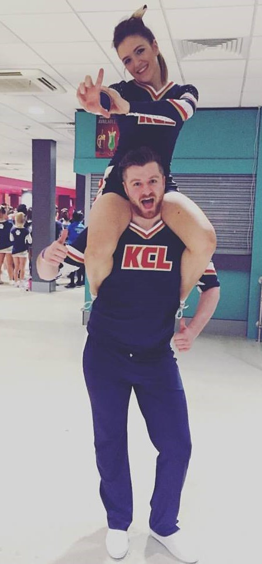
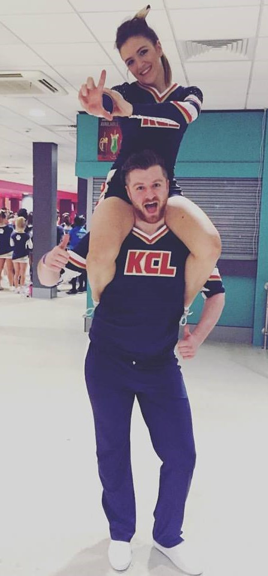

CV
- 2.1 BSc (Hons) Biochemistry and Genetics – University of Nottingham (2011-2014)
I believe I would excel in this job post due to having experience with with experimental design and statistical analysis. Modules I found particularly interesting included developmental biology, medical molecular genetics, and cancer biology, as well as laboratory modules. My dissertation involved bioinformatic analysis of genomes of yeast strains to assess for differences relating to cellular ageing. Throughout this degree I also developed a keen interest in regenerative medicine, receiving a 1st for my literature review in ‘Transdifferentiation of pancreas cells into insulin-producing beta-like cells’.

- Bachelor of Dental Surgery (BDS) - King’s College London (2014-2018)
Whilst practical application of digital dentistry was not available as much as I would have liked during my undergraduate degree, I sought opportunities to become fully immersed in the community whilst at KCL, improving organisational, leadership and communication skills:
- Representing the university nationally at numerous cheerleading competitions
- Founding the role of Science + Medical student representative for the university LGBTQ+ society, hosting and speaking at events around being LGBTQ+ and working in healthcare, and issues surrounding trans+ patients and their experiences with healthcare.
- Founding the university dodgeball society.
- Becoming a member of the widening participation team. This involved going into secondary schools to talk to, and encourage students from underprivileged students backgrounds, to pursue careers in dentistry.
- Associate of King’s College (AKC) - King’s College London (2014-2018)
- Dental Foundation Training – Maltings Dental Practice, Grantham (2018-2019)
I am incredibly grateful for the excellent year I spent at the Maltings under the supervision of Peter Butcher. Through visitors and demonstrations at the practice, attendance at Grantham ITI study clubs and study days I have furthered my understaning of the use of intra-oral scanners, for the application of orthodontics, and treatment planning for indirect restorations and implant prostheses. This only fuelled my desire to learn about cutting edge digital dentistry.
- Dental Core Training
- Oral Surgery and Orthodontics – Queen Elizabeth Hospital, Kings Lynn (Sep ‘19 – present)
Furthering my theoretical knowledge and application in areas of dentistry I find particularly interesting, including experience in theatres and on conscious sedation clinics, as well as Multi-Disciplinary Team meetings for oral cancer patients.
- Honorary On-Call OMFS – Norfolk and Norwich Hospital (Sep ‘19 - present)
This post grants me exposure to wider Oral and Maxillofacial surgery I would otherwise not experience, requires cross-site communication (hospital-to-hospital referrals) and working alongside healthcare professionals of varying roles, in an unfamiliar environment.
I believe I would excel in this job post due to having experience with with experimental design and statistical analysis. Modules I found particularly interesting included developmental biology, medical molecular genetics, and cancer biology, as well as laboratory modules. My dissertation involved bioinformatic analysis of genomes of yeast strains to assess for differences relating to cellular ageing. Throughout this degree I also developed a keen interest in regenerative medicine, receiving a 1st for my literature review in ‘Transdifferentiation of pancreas cells into insulin-producing beta-like cells’.
Whilst practical application of digital dentistry was not available as much as I would have liked during my undergraduate degree, I sought opportunities to become fully immersed in the community whilst at KCL, improving organisational, leadership and communication skills:
- Representing the university nationally at numerous cheerleading competitions
- Founding the role of Science + Medical student representative for the university LGBTQ+ society, hosting and speaking at events around being LGBTQ+ and working in healthcare, and issues surrounding trans+ patients and their experiences with healthcare.
- Founding the university dodgeball society.
- Becoming a member of the widening participation team. This involved going into secondary schools to talk to, and encourage students from underprivileged students backgrounds, to pursue careers in dentistry.
I am incredibly grateful for the excellent year I spent at the Maltings under the supervision of Peter Butcher. Through visitors and demonstrations at the practice, attendance at Grantham ITI study clubs and study days I have furthered my understaning of the use of intra-oral scanners, for the application of orthodontics, and treatment planning for indirect restorations and implant prostheses. This only fuelled my desire to learn about cutting edge digital dentistry.
- Oral Surgery and Orthodontics – Queen Elizabeth Hospital, Kings Lynn (Sep ‘19 – present)
- Honorary On-Call OMFS – Norfolk and Norwich Hospital (Sep ‘19 - present)
Furthering my theoretical knowledge and application in areas of dentistry I find particularly interesting, including experience in theatres and on conscious sedation clinics, as well as Multi-Disciplinary Team meetings for oral cancer patients.
This post grants me exposure to wider Oral and Maxillofacial surgery I would otherwise not experience, requires cross-site communication (hospital-to-hospital referrals) and working alongside healthcare professionals of varying roles, in an unfamiliar environment.